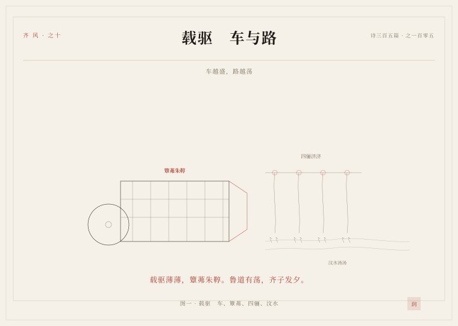
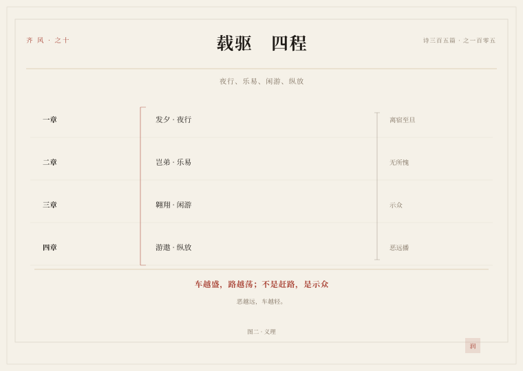

第一百零五篇 载驱
齐风 · 之十 SJ105
朗读 · 普通话
依经文原文朗读，章次不读出；配古琴底乐，不改速、不加拖腔。全库同一音色（豆包 TTS），非播音员录制。
一 解题
诗三判：
- 谁在说：齐人。见襄公盛车服、疾驱于通道大都，与文姜淫，播恶于万民。
- 说什么事：四章由车到马到水到人。载驱薄薄、簟茀朱鞟；四骊济济、垂辔濔濔；汶水汤汤、行人彭彭；汶水滔滔、行人儦儦。
- 为何编在此：104 写“归”，105
写“驱”。归是回，驱是示；一归一驱，丑闻成路。
《毛序》：“《载驱》，齐人刺襄公也。无礼义故，盛其车服，疾驱于通道大都，与文姜淫，播其恶于万民焉。”
朱子《诗集传》：“赋也。薄薄，疾驱声。簟，方文席也。茀，车后户也。朱，朱漆也。鞟，兽皮之去毛者，盖车革质而朱漆也。夕，犹宿也。发夕，谓离于所宿之舍。齐人刺文姜乘此车而来会襄公也。……四骊，言物色盛也。济济，美貌。濔濔，众也。岂弟，乐易也。汶水，齐、鲁之间大水也。彭彭、儦儦，皆行人众貌。翱翔、游遨，皆闲游之意。”
本库的看法：《载驱》是一首把“淫”写成“驰”的诗。
车越盛，路越荡，行人越多；不是赶路，是示众。
四章只写车、马、水、人，不写一句“会”；“发夕”“岂弟”“翱翔”“游遨”四个词，把夜行、乐易、闲游、纵放一层层推开。
恶越远，车越轻。
先辨五事：“载驱”的“载”是发语词，不是“载货”；“簟茀”是竹席车蔽，不是“席子”；“朱鞟”是红漆兽皮，不是“红皮衣”；“发夕”是离宿至旦，不是“发工资”；“岂弟”读
kǎi tì，是乐易，不是“兄弟”。
二 经文
第一章
载驱薄薄，簟茀朱鞟。
鲁道有荡，齐子发夕。
第二章
四骊济济，垂辔濔濔。
鲁道有荡，齐子岂弟。
第三章
汶水汤汤，行人彭彭。
鲁道有荡，齐子翱翔。
第四章
汶水滔滔，行人儦儦。
鲁道有荡，齐子游遨。
分章：四章，章四句。
三 韵读
- 一章：薄、鞟、夕，铎部。
- 二章：济、濔、弟，脂部。
- 三章：汤、彭、翔，阳部。
- 四章：滔、儦、遨，宵部。
读法：铎部短，脂部细，阳部亮，宵部远；车声越短，水声越长，人声越远。
四 字义与名物
- 载：发语词；薄薄：疾驱声。
- 簟：方文竹席；茀：车后户；朱：红漆；鞟：去毛兽皮。四者皆车饰。
- 鲁道：通向鲁的大道；荡：平易。
- 齐子：文姜；发夕：离宿至旦；岂弟：乐易/闿明。
- 四骊：四匹黑马；济济：美盛；濔濔：众多。
- 汶水：齐、鲁之间的大水；汤汤/滔滔：水大貌。
- 彭彭/儦儦：行人众貌；翱翔/游遨：闲游、纵放。
五 今译
车声薄薄，竹席车蔽、红漆兽皮。鲁道平坦，文姜离宿到旦。
四匹黑马济济，垂下的缰绳濔濔。鲁道平坦，文姜乐易。
汶水汤汤，行人彭彭。鲁道平坦，文姜翱翔。
汶水滔滔，行人儦儦。鲁道平坦，文姜游遨。
六 章旨
- 一章：写“车”与“发夕”。车饰盛，夜行急；发夕是离宿，不是赶路。
- 二章：写“马”与“岂弟”。马盛，辔垂，人乐易；乐易是无所愧。
- 三章：写“水”与“翱翔”。水大，人多，人闲游；闲游是示众。
- 四章：写“水”与“游遨”。水更急，人更多，人更纵；层层推到“游遨”，恶已远播。
- 总收：车越盛，路越荡；不是赶路，是示众。
诗不写“淫”，只写“盛”；盛是淫的外衣。
七 诗教
- 赋：直陈车、马、水、人；赋到极盛，刺在言外。
- 观：观“播恶”。恶不出门，尚可掩；一出通道大都，万民皆见。恶之传播，比恶本身更重。
- 群：行人彭彭、儦儦，是众目；众目之下，仍游遨，才见无耻。
- 怨：诗里有刺，无怨。刺在“盛”，怨在“万民”。
八 分寸与边界
- 不可把“载驱”当载货。它是“乃驱”；一读载货，车就成货车。
- 不可把“簟茀”当席子。它是车后竹蔽；一读席子，车饰就散。
- 不可把“朱鞟”当红皮衣。它是红漆兽皮车饰；一读皮衣，人就成穿裘。
- 不可把“发夕”当发工资。它是离宿至旦；一读发薪，夜行就成笑话。
- 不可把“岂弟”当兄弟。它是乐易；一读兄弟，第二章就成亲情。
九 存疑
- 诗旨：毛序“刺襄公，与文姜淫”；朱子“刺文姜乘此车会襄公”。一刺襄，一刺姜；本库两存，以“车盛”读。
- “发夕”：毛传“夕，犹宿；发夕，离所宿之舍”；朱子同。一说“发夕”为夕发。
两读相近。
- “岂弟”：毛传“乐易”；郑笺“闿明”。两读皆通，本库从乐易。
- “汶水”：齐、鲁间大水；所会之地，笺不言何邑。
- 作者与年代：毛序属襄公；朱子同。无确证。
十 跨典
- 《左传·桓公十八年》：“公会齐侯于泺，遂及文姜如齐。齐侯通焉。”——此诗本事；车驱于道，史笔在后。
- 《诗经·齐风·南山》：“鲁道有荡，齐子由归。”——同一鲁道；一归一驱，前后相照。
- 《诗经·齐风·敝笱》：“齐子归止，其从如云。”——从者盛，车马盛；两盛相合，恶乃远播。
- 《诗本音》：四章铎、脂、阳、宵，见卷五；韵部按古韵推定。
十一 双卡与图
双卡八对：
| 载（发语词） |
载（载货） |
| 簟茀（车后竹蔽） |
簟茀（席子） |
| 朱鞟（红漆兽皮） |
朱鞟（红皮衣） |
| 发夕（离宿至旦） |
发夕（发工资） |
| 四骊（四黑马） |
四骊（四匹马泛称） |
| 济济/濔濔（美盛/众） |
济济（济济一堂） |
| 岂弟（乐易，kǎi tì） |
岂弟（兄弟） |
| 翱翔/游遨（闲游） |
翱翔（飞鸟） |

图一 · 载驱 车、簟茀、四骊、汶水

图二 · 载驱 发夕/岂弟/翱翔/游遨
读图三处：
- 车只画后户：图一左一辆车，重点画车后竹席与红漆皮；不画整车，避开“画马成气球”的死路。
- 四马只画蹄与辔：图一右四条缰绳、八只蹄印，不画马身；马在画外，车声在画内。
- 水与行人：图二下汶水三条波纹，上四个行人剪影；人越多，水越显长。